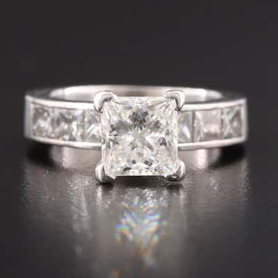

OUTPRICEDPlatinum 4.50 CTW Diamond Ring
Platinum princess-cut diamond engagement ring, channel-set princess-cut diamond shoulders,
0 min left
Current bid$2,938 · 20 bids
Est. value$2,978
Your max bid$1,679
All-in at max$1,966
Projected close$2,939
Margin at bid−$435
Details & price history →